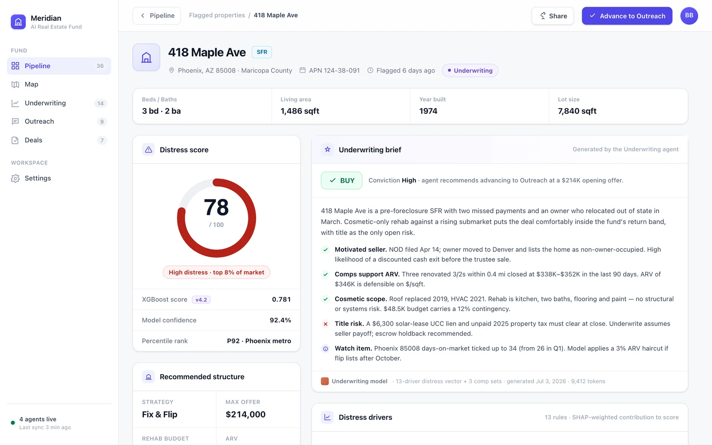

Scout
Sweeps three parallel data providers to surface distressed properties and land parcels the market hasn't priced yet.
- ATTOM, RESO MLS & probate signals
- SFR, multifamily, commercial & land
Scout, Underwrite, Outreach and Structure run as one autonomous pipeline across distressed properties and land — from public records to a Buy / Pass / Watch brief on every parcel.
Each agent owns a stage and hands off to the next — a parcel enters as a public record and leaves as a scored, underwritten, structured deal.
Sweeps three parallel data providers to surface distressed properties and land parcels the market hasn't priced yet.
Runs the 13-rule distress engine and XGBoost scoring, then an LLM agent writes a Buy / Pass / Watch brief you can read in seconds.
Turns a qualified parcel into contact — an LLM agent drafts owner outreach off the underwriting brief so scored deals don't stall in a spreadsheet.
An LLM deal-structuring agent picks from a 9-strategy library to shape the offer that best fits the property, the owner and the numbers.
Every property is judged two ways — a transparent 13-rule classifier and an XGBoost model over 11 features — so a Buy verdict is never a black box.
Explicit distress classification across two tiers — the signals that flag a property before a model ever sees it.
An XGBoost model served on Flask turns the signals into a single 0–100% distress score that ranks the whole pipeline.
Every scored parcel, every brief, every map pin — the work of four agents laid out for the analyst who signs off the deal.
The dashboard is the fund's control room: parcels flow left to right through the four agents, each carrying its distress score and current stage.

Open any property to see the distress drivers that fired, its 0–100% score and the LLM-written underwriting brief with a Buy, Pass or Watch verdict.

Three data feeds, a scoring stack, a mapping layer and a strategy library — gated by subscription tier across every asset class.
ATTOM across 8 endpoints, RESO MLS through an OData client, and dedicated probate signal detection — running in parallel so the Scout never waits on one source.
ATTOM · RESO MLS · ProbateAn explicit, two-tier rule engine flags critical and supporting distress signals — the transparent layer beneath the ML score.
Two tiers · ExplainableA gradient-boosted model over 11 features, served on Flask, scores every property 0–100% and ranks the pipeline for the underwriting agent.
11 features · 0–100%Every parcel lives on a 3D Mapbox map with Street View popups, so the analyst sees the block before the offer, not after.
3D map · Street ViewThe structuring agent draws from a 9-strategy library to shape each offer around the property, the owner and the underwriting brief.
LLM agent · 9 strategiesSubscription tiers gate access across SFR, multifamily, commercial and land — each user sees the asset classes their plan covers.
SFR · Multi · Commercial · LandWe'll walk you through Scout to Structure on live distressed inventory — the distress engine, the scores and the briefs, end to end.